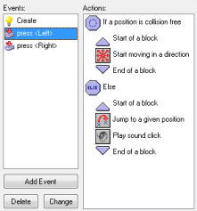
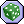
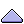
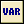

Here the question is asked whether a position for the current instance is collision free. If so, the instance starts moving in a given direction. If not, the instance jumps to a given position. Note that the blocks are indented. This gives a better overview of the actions. (In particular when you use blocks inside blocks.) Also it is easier to detect when you forgot a start block or end block action.
For all questions there is a field labeled NOT. If you check this field, the result of the question is reversed. That is, if the result was true it becomes false and if it was false, it becomes true. This allows you to perform certain actions when a question is not true.
For many questions you can indicate that they should apply to all instances of a particular object. In this case the result is true only if it is true for all instances of the object. For example, you can check whether for all balls the position slightly to the right is collision free.
The following questions and related actions are available. (Note that they all have a differently shaped icon and a different background color so that they can more easily be distinguished from other actions.)
Check Empty
This question returns true if the current instance, placed at the
indicated position does not generate a collision with an object.
You can specify the position as either absolute or relative. You
can also indicate whether only solid, or all objects, should be
taken into account. This action is typically used to check whether
the instance can move to a particular position.
Check
Collision
This is the reverse of the previous action. It returns true if
there is a collision when the current instance is placed at the
given position (again, either only with solid objects or with all
objects).
Check Object
This question returns true if the instance placed at the indicate
position meets an instance of the indicated object.
Test Instance
Count
You specify an object and a number. If the current number of
instances of the object is equal to the number the question returns
true. Otherwise it returns false. You can also indicate that the
check should be whether the number of instances is smaller than the
given value or larger than the given value. This is typically used
to check whether all instances of a particular type are gone. This
is often the moment to end a level or a game.
 Test Chance
You specify the number of sides of a dice which is then thrown.
Then if the dice lands on one, the result is true and the next
action is performed. This can be used to put an element of
randomness in your game. For example, in each step you can generate
with a particular chance a bomb or a change of direction. The
larger the number of sides of the dice, the smaller the chance. You
can actually use real numbers. For example if you set the number of
sides to 1.5 the next action is performed two out of three times.
Using a number smaller than 1 makes no sense.
Check
Question
You specify a question. A dialog is shown to the player with a yes
and a no button. The result is true is the player answers yes.
Test Expression
This is the most general question action. You can enter an
arbitrary expression. If the expression evaluates to true (that is,
a number larger or equal to 0.5) the next action is performed. See
below for more information on expressions.
Check Mouse
Returns true if the indicated mouse button is pressed. A standard
use is in the step event. You can check whether a mouse button is
pressed and, if so, for example move to that position (use the jump
to a point action with values mouse_x and
mouse_y).
Check Grid
Returns true if the position of the instance lies on a grid. You
specify the horizontal and vertical spacing of the grid. This is
very useful when certain actions, like making a turn, are only a
llowed when the instance is on a grid position.
 Start Block
Indicates the start of a block of actions.
End Block
Indicates the end of a block of actions.
Else
Behind this action the else part follows, that is executed when the
result of the question is false.
Repeat
This action is used to repeat the next action (or block of actions)
a number of times. You simply indicate the number.
Exit Event
When this action is encountered no further actions in this event
are executed. This is typically used after a question. For example,
when a position is free nothing needs to be done so we exit the
event. In this example, the following actions are only executed
when there is a collision.
If you want more control over what is happening in the game you can use the built-in programming language that is described in Part 4 of the documentation. If gives you much more flexibility than using the actions. There are also actions to define and test variables. They are simpler to use than code and can be very useful for your games. The following actions deal with this.
Execute Code
When you add this action, a form shows in which you can type a
piece of code which must be execute. This can contain simple
function calls or more complex code. Use the code action preferably
only for small pieces of code. For longer pieces you are strongly
advised to use scripts which are described in Part 2 of the documentation. Normally
when you use this command you will get the rather unhelpful comment
"Execute a piece of code" inside the actions pane. However,
you can change this by adding a three slash ( /// ) comment
on the first line of the program, and the contents are used as the
script description instead.
Comment
Use this action to add a line of comment to the action list. The
line is shown in italic font. Adding comments helps you remember
what your events are doing. The action does not do anything. But
realize that it still is an action. So when you place it after a
conditional action it is the action that is executed if the
condition is true (even though it does not do anything).
Set Variable
There are many built-in variables in the game. With this action you
can change these. Also you can create your own variables and assign
values to them. You specify the name of the variable and the new
value. When you check the Relative box, the value is added
to the current value of the variable. Please note that this can
only be done if the variable already has a value assigned to it!
See below for more information about variables.
Test
Variable
With this action you can check what the value of a particular
variable is. If the value of the variable is equal to the number
provided, the question returns true. Otherwise it returns false.
You can also indicate that the check should be whether the value is
smaller than the given value or larger than the given value. See
below for more information about variables. Actually, you can use
this action also to compare two expressions.
 Draw
Variable
With this action you can draw the value of a variable at a
particular position on the screen. Note that this can only be used
in the draw event of an object.
| Converted from CHM to HTML with chm2web Pro 2.85 (unicode) |